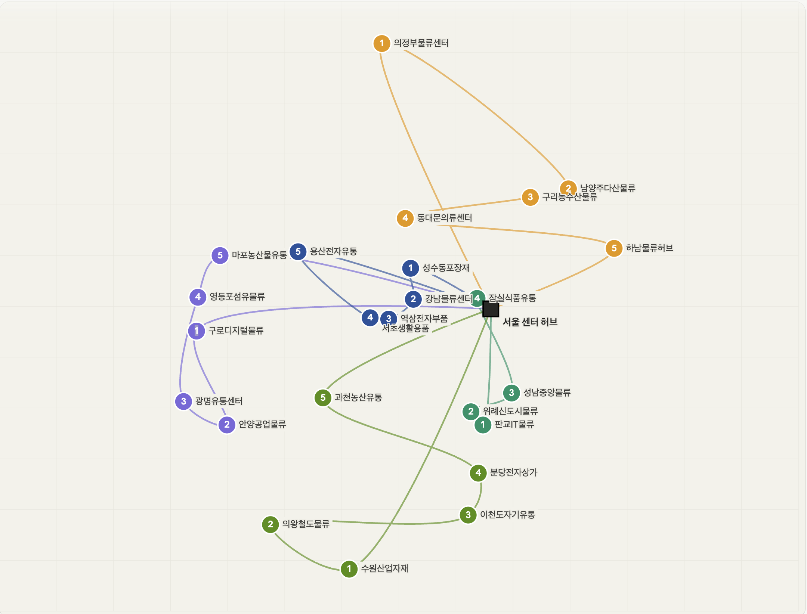

드래그: 이동 · 휠: 배율 · ESC: 닫기
직전 모놀리식(omin)에서 한 도메인에 결함이 나면 전체가 멈추고 특정 도메인 전용 기술(PostGIS)을 전 팀원이 설치해야 했습니다. 이 비효율을 직접 겪고 도메인별 독립 배포·기술 선택이 가능한 MSA로 확장. B2B 도메인을 코드에 녹이기 위해 DDD 4계층(헥사고날)을 적용하고 서비스 간 통신은 "검증=동기(Feign), 통지=비동기(Kafka)"로 의도적으로 분리했습니다.
| 트랙 | 역할 | 인원 | 배정 방식 |
|---|---|---|---|
| 허브 배송 담당자 | 허브 간 화물 이동 (경기도 허브 → 부산 허브) | 전체 10명 | 대기시간·순번 기반 라운드로빈 |
| 업체 배송 담당자 | 최종 허브 → 수령 업체 배송 | 허브당 10명 | OR-Tools VRPTW (시간창·차량 부하 균등) |
두 트랙의 업무는 명확히 분리 — 허브 배송 담당자는 허브 → 업체 배송 불가, 업체 배송 담당자는 허브 간 배송 불가. 이 도메인 특성을 코드로 강제하기 위해 배정 알고리즘 자체를 트랙별로 분리(라운드로빈 / VRPTW)했습니다.
12개의 마이크로서비스를 Spring Cloud Gateway · Eureka로 묶고 통신은 검증을 동기(Feign)로, 통지를 비동기(Kafka Outbox)로 분리합니다. 바운디드 컨텍스트별 PostgreSQL 분리(database-per-service)로 서비스 독립성·장애 격리를 확보했습니다.
설계 의도: 12개 서비스를 7개 바운디드 컨텍스트(파선)로 묶고 각 컨텍스트는 자기 PostgreSQL을 둠(database-per-service).
배송 컨텍스트는 처음엔 delivery / delivery_manager / delivery_route 3개 서비스로 분할 시도했으나
강한 응집성·동일 트랜잭션 경계 요구 때문에 delivery-service 한 컨텍스트로 통합하고 내부 도메인으로 분리.
| 결정 | 대안 | 선택 이유 — 트레이드오프 명시 |
|---|---|---|
| MSA + DDD 헥사고날 | 모놀리식 (omin) | 직전 omin에서 한 도메인에 결함이 나면 전체가 멈추고 도메인 전용 기술(PostGIS)을 전 팀원이 설치해야 했던 비효율 직접 경험 → 도메인별 독립 배포·기술 선택이 가능한 MSA로. |
| database-per-service | 공유 DB · schema 분리 | 바운디드 컨텍스트별 PostgreSQL 분리 → 서비스 독립성·장애 격리. 데이터 정합성은 Outbox 이벤트로 별도 보장. |
| "검증=동기, 통지=비동기" 통신 분리 | 전부 동기 / 전부 비동기 | 정합성 검증("이 hub가 있나?")은 응답을 받아야 진행 가능 → 동기(Feign). 삭제 통지는 응답 불필요 → 비동기(Kafka). 의도적 분리. |
| Outbox 패턴 | Saga · 2PC · 직접 Kafka 발행 | 단방향 통지·응답 불필요라 full Saga는 과함. 2PC는 분산 트랜잭션 회피. 직접 발행은 유실/유령 이벤트 위험 → at-least-once + 결과적 일관성의 Outbox가 적정. |
| 단일 인스턴스 → 분산 락 생략 | ShedLock · 리더 선출 | 각 서비스 단일 인스턴스 배포 토폴로지 → Outbox 스케줄러 중복 실행 자체가 발생 X. 수평 확장 시 ShedLock + 컨슈머 멱등 처리 추가 예정. |
P · 업체 삭제 시 주문·상품 등 타 서비스 통지가 필요한데, "DB 커밋 → Kafka 발행" 사이 발행 실패 시 이벤트 영구 유실(DB는 지워졌는데 남들은 모름), 발행 후 DB 롤백 시 유령 이벤트(다른 서비스는 삭제됐다고 알고 처리). 분산 트랜잭션(2PC)은 가용성을 해치고 MSA와 부적합.
A · 삭제 트랜잭션 내 OutboxEvent(PENDING) 원자 저장 → DB 커밋과 함께 커밋(또는 함께 롤백). OutboxEventScheduler가 @Scheduled(fixedDelay=10000)로 10초마다 PENDING을 Kafka로 발행→PUBLISHED. 실패 시 PENDING 유지 → 다음 주기 자동 재발행.
R · 분산 트랜잭션 없이 at-least-once 발행 + 결과적 일관성 보장. 단위 테스트로 단일 이벤트 실패가 나머지 발행을 막지 않음 검증.
// 업체 삭제 트랜잭션 내 Outbox 원자 저장 @Transactional public void deleteCompany(UUID companyId) { companyRepository.delete(companyId); outboxRepository.save(new OutboxEvent( "company.deleted", companyId, payload, "PENDING" )); // 같은 트랜잭션 — 원자 보장 } // 10초마다 PENDING → Kafka @Scheduled(fixedDelay = 10000) public void publish() { outboxRepository.findByStatus("PENDING").forEach(event -> { kafkaTemplate.send(event).addCallback( ok -> outboxRepository.markPublished(event.getId()), fail -> log.warn("retry next tick") ); }); }
P · 외부 서비스 호출이 타임아웃까지 블로킹되면 대기 스레드 누적 → 내 서비스까지 연쇄로 죽음(cascading failure). 단순 동기 호출은 한 서비스 장애가 전체로 번지는 구조.
A · 통신을 의도적으로 분리: 정합성 검증은 동기(Feign)로, 삭제 통지는 비동기(Kafka)로. user/hub/order 호출은 @CircuitBreaker + @Retry로 감쌈. CB(window 10·실패율 50%·OPEN 10s·slow-call 3s·retry 3회/500ms)로 fallback 즉시 반환.
R · CB OPEN 시 즉시 fallback 반환 → 대기 스레드 누적·연쇄 장애 차단. CB 상태전이(OPEN/CLOSED/HALF_OPEN)·호출차단·slow-call 전체 로깅.
@Retry(name = "hubService") @CircuitBreaker(name = "hubService", fallbackMethod = "hubServiceFallback") public boolean validateHubExists(UUID hubId) { return hubClient.exists(hubId); // 동기 검증 } private boolean hubServiceFallback(UUID hubId, Throwable t) { log.warn("Hub validation fallback — CB OPEN. hubId={}", hubId); return false; // 즉시 반환 → 스레드 점유 X }
| 설정 항목 | 값 | 이 값으로 정한 이유 |
|---|---|---|
| sliding window | 10 calls | 실패율 산출 표본 크기. 너무 작으면 1~2건 실패에 과민 반응, 너무 크면 장애 감지가 늦음 → 둘의 절충점 |
| failure rate threshold | 50% | retry 3회를 통과하고도 절반이 깨지면 일시적 결함이 아니라 명백한 장애로 판단. 그 이하(예: 30%)면 단발성 오류에도 차단돼 과민 |
| wait in OPEN | 10s | 외부 서비스 재기동·순간 부하 해소에 통상 수~십수 초. 더 짧으면 복구 전 재요청이 몰려 재차 OPEN, 더 길면 정상화 후에도 차단 지속 |
| half-open calls | 3 | 1건 성공은 우연일 수 있어 성급한 CLOSE를 방지. 3건 시험 호출로 실제 복구 여부를 확인 후 닫음 |
| slow call threshold | 3s | 등록 플로우가 허용할 수 있는 지연 상한. Feign read timeout보다 짧게 둬 '느린 성공'도 장애로 간주해 미리 차단 |
| retry | 3회 / 500ms | 패킷 손실·순간 GC 같은 일시 결함은 보통 1~2회 재시도로 흡수. 500ms 간격으로 순간 부하 분산, 3회 초과 시 일시 결함이 아니라 보고 CB에 위임 |
값 선정 전제 — 데모 트래픽 기준의 보수적 baseline. Resilience4j 기본값을 출발점으로 위 근거에 따라 조정했고 운영 전환 시 실제 호출량·지연 분포로 부하 테스트 후 재튜닝하는 것을 전제로 한 초기값.
P · B2B 물류는 업체 영업시간(예: "오전 9~11시 입고")이 SLA의 핵심. 어기면 계약 위반 → 시간창을 제약(constraint — 솔버가 반드시 지켜야 하는 조건)으로 모델링해야지 후처리 정렬로는 보장 불가. 단순 라운드로빈(들어온 순서대로 담당자에게 균등 배분)은 거리·시간창·차량 부하 균등을 못 고려해 비효율.
A · 매일 06:00 스케줄러가 허브별 당일 배송을 모아 VRPTW로 일괄 최적화. 트랙 분리 — 허브 간 = 라운드로빈, 업체 = OR-Tools VRPTW. 제약을 모두 만족하는 해가 없으면(infeasible) 시간창을 단계적으로 완화해 재시도.
ceil(총건/담당자수)로 부하 균등PATH_CHEAPEST_ARC) + 그 경로를 반복 개선하며 부분 최적에 갇히지 않도록 탐색하는 기법(GUIDED_LOCAL_SEARCH), 탐색 5초 제한R · 시간창을 솔버의 직접 제약으로 모델링해 SLA 보장 가능한 자동 배정 체계 확보. 해가 없을 때도 시간창 완화로 가용성 확보.
| 개념 | 코드 표현 | 의미 |
|---|---|---|
| Depot | depot 인덱스 | 모든 라우트의 출발·복귀 지점(허브) |
| Dimension | AddDimension(...) | 라우트 따라 누적되는 값(시간·거리·용량)에 제약 부여 |
| Time Window | Dimension slack + 노드별 setRange | 업체별 영업시간 — 도착 가능 구간 |
| 1st Solution Strategy | PATH_CHEAPEST_ARC | 초기해를 빠르게 만드는 휴리스틱 (가까운 노드 우선) |
| Local Search Metaheuristic | GUIDED_LOCAL_SEARCH | 초기해를 점진적으로 개선 — 국소최적 탈출 메커니즘 |
| Time Limit | setTimeLimit | 솔버 탐색 시간 상한 — 충분히 좋은 해에서 stop |
// VRPTW 핵심 구성 // nodes: 방문 지점 수(허브+업체) / vehicles: 담당자 수 / depot: 출발·복귀 지점(허브) 인덱스 RoutingIndexManager manager = new RoutingIndexManager( nodes, vehicles, depot ); // AddDimension: 시간/거리/용량처럼 라우트 따라 누적되는 값에 제약 부여 routing.AddDimension( timeCallback, 30, // 노드별 대기 가능 여유(slack) — 시간창 도착에 30분 버퍼 480, // 한 담당자 라우트 총 시간 상한(분) = 8시간 false, "Time" // depot 시작 시점에 누적값 리셋 안 함 ); // 차량당 상한 — 부하 균등 int maxPerVehicle = (int) Math.ceil((double) total / vehicles); // 솔버 구성 = "초기해를 빠르게 + 그 해를 개선" 2단 RoutingSearchParameters params = main.defaultRoutingSearchParameters() .toBuilder() .setFirstSolutionStrategy(FirstSolutionStrategy.PATH_CHEAPEST_ARC) // 가까운 노드부터 그리디로 초기해 생성 .setLocalSearchMetaheuristic(LocalSearchMetaheuristic.GUIDED_LOCAL_SEARCH) // 초기해를 개선하며 국소최적 탈출 .setTimeLimit(Duration.ofSeconds(5)) .build();
왜 일괄(batch)인가 — 실시간 배정 = 들어오는 순서대로 그리디 → 국소 최적(지금 가까운 사람에게 줬더니 나중 배송이 꼬임). VRPTW는 당일 전체를 한 번에 모아야 전역 최적. B2B는 "즉시"보다 "당일 정시 배송"이 중요 → 일괄이 비즈니스에 더 맞음.
해가 없을 때(infeasible) — 시간창만 단계적 완화 · 특정 일자에 시간창이 좁고 물량이 몰리면 솔버가 infeasible을 반환한다. 단순 예외 throw는 가용성을 해치므로 다른 제약은 두고 시간창만 ±30 → ±60 → ±90분으로 단계적으로 풀어 재시도한다. 차량 추가 투입은 인력 자원 문제라 시스템 제어 밖, 모든 제약 무시 후 재계산은 SLA 약속 자체가 깨지므로 배제 — SLA 영향이 가장 작은 시간창부터 양보했다. 모두 실패하면 ROUTE_OPTIMIZATION_FAILED로 운영자에게 알리고 스케줄러 레벨에서 10초 간격 3회 재시도한다.

CLICK TO ZOOMP · 배송담당자 등록 시 "최대 seq 조회 → +1 저장" 사이 동시 요청이 끼면 Read-Modify-Write race → 같은 seq가 두 번 발급.
A · @Lock(LockModeType.PESSIMISTIC_WRITE)로 최대 seq row를 select for update. 대안 검토: 낙관적 락은 어차피 매번 충돌하는 채번엔 재시도 비용만 누적, 분산 락은 단일 인스턴스 토폴로지엔 과함 → "충돌 잦고 짧은 임계구역"엔 비관적 락이 최적이라 판단.
R · 동시 등록 요청에서도 seq 유일성 보장. 재시도 로직 없이 DB 레벨에서 차단. 추가로 락 타임아웃 3초를 명시해 장기 트랜잭션·데드락 시 LockTimeoutException으로 빠른 실패 처리 — 무한 대기로 인한 스레드 점유 차단. 동시 등록 시나리오 단위 테스트로 seq 유일성을 검증했다.
@Lock(LockModeType.PESSIMISTIC_WRITE) @QueryHints({@QueryHint(name = "jakarta.persistence.lock.timeout", value = "3000")}) @Query("select dm from DeliveryManager dm " + "where dm.hubId = :hubId order by dm.seq desc") Optional<DeliveryManager> findTopByHubIdOrderBySeqDesc(UUID hubId); // → SELECT ... FOR UPDATE — 동시 요청은 대기 후 순차 처리, 3초 초과 시 LockTimeoutException
3단계 학습 곡선 연결 — 전 회사의 비동기 다운로드 race condition을 해결하면서 "정확히 어떤 락이 어느 상황에 맞는지" 몰랐던 게 학습 동기. 부트캠프 스터디에서 낙관적/비관적/분산 락 트레이드오프를 자청 발표. 본 프로젝트에서 "충돌 잦고 짧은 임계구역엔 비관적 락"을 실제로 적용 — 한 사이클 완결.
16개 컨테이너 규모의 MSA를 전시·데모용으로 월 ~$14에 운용하기 위해, 인프라 전체를 Terraform 단일 코드베이스(IaC)로 선언하고 GitHub Actions + OIDC로 빌드·배포를 자동화했습니다. "비용 · 보안 · 운영부담"을 판단 기준으로, 매니지드 오케스트레이션 대신 단일 EC2 + Cloudflare Tunnel 조합을 의도적으로 선택했습니다.
CI · GitHub Actions — develop push 시 9개 서비스를 matrix 병렬 빌드 → ECR push(:latest, :sha). OIDC로 AWS 임시 자격증명을 발급받아 장기 액세스키를 저장하지 않음. type=gha 레이어 캐시로 빌드 시간 단축.
IaC · Terraform — VPC(NAT 없는 퍼블릭 서브넷)·EC2·RDS(프리티어)·ECR·IAM(OIDC role)·EventBridge Scheduler·Lambda를 하나의 코드로 선언. Cloudflare(Tunnel·DNS·SSL)까지 같은 apply로 생성하고 터널 토큰을 EC2 user_data에 자동 주입.
네트워킹 · Cloudflare — ALB/EIP 없이 Tunnel로 오리진을 노출해 인바운드 포트를 전부 닫고(공격면↓), 무료 Universal SSL로 HTTPS 종단. 운영시간 외/주말엔 Worker가 점검 페이지로 폴백.
비용 운영 · EventBridge + Lambda — 평일 08:40 start / 21:00 stop으로 EC2·RDS를 자동 전원 제어, 전시 시간대만 가동해 비용을 절반 이하로 절감.
docker-compose를 그대로 재사용하는 편이 훨씬 저렴하고 단순.# 배포 파이프라인 & 런타임 토폴로지 push(develop) ─▶ GitHub Actions (OIDC · matrix ×9) ─▶ Amazon ECR │ pull 사용자 ─https─▶ Cloudflare (Universal SSL + Worker 폴백) ▼ └─Tunnel(무포트)─▶ EC2 t3.medium (앱9 + kafka/redis + cloudflared) ─▶ RDS (DB 8개) ▲ EventBridge + Lambda — 평일 08:40 start / 21:00 stop
| 영역 | 스택 |
|---|---|
| Backend | Java 17 · Spring Boot 3.5.12 · Spring Cloud 2025.0.1 (Eureka · Gateway · OpenFeign) |
| Messaging | Spring Kafka · Outbox 패턴 |
| Resilience | Resilience4j · Circuit Breaker · Retry |
| Data | PostgreSQL (database-per-service) · Redis · JPA · QueryDSL |
| Optimization | Google OR-Tools 9.12.4544 (VRPTW) |
| Infra (IaC) | Terraform · AWS (EC2 · RDS · ECR · IAM/OIDC · EventBridge · Lambda) · Docker Compose |
| CI/CD | GitHub Actions (OIDC · matrix build) → Amazon ECR |
| Edge / Network | Cloudflare Tunnel · Workers · Universal SSL |
프로젝트를 마치며 두 갈래로 정리. 무엇을 잘했고 어떤 부분이 트레이드오프를 따진 의도적 선택이었는지. 각 선택의 한계와 다음 단계는 항목별 → 라인에 함께 적음.
delivery / delivery_manager / delivery_route 3개 서비스로 분할했으나 실제 도메인 분석 결과 3개 도메인이 동일 트랜잭션 경계에서 함께 변경되는 강한 응집성을 보임 → 별도 서비스로 분리하면 분산 트랜잭션 비용만 증가한다고 판단해 delivery-service 한 컨텍스트로 통합 + 내부 도메인으로 분리.